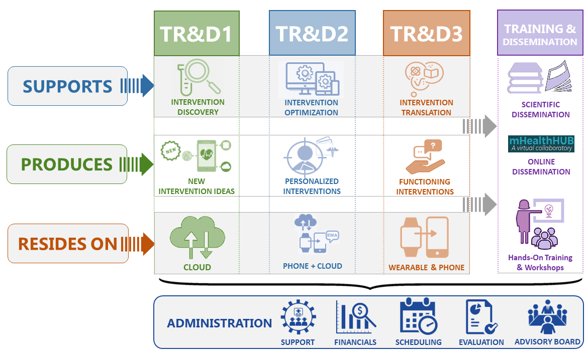

INNOVATION & IMPACT

Healthcare is the single largest sector of our economy and the continuing health of our society is increasingly threatened by the enormous cost of providing healthcare, especially for chronic diseases. Many of these diseases are inextricably linked to mutable health behaviors such as poor diet, lack of physical activity, and smoking. The ballooning costs have reinvigorated the focus on potential economic benefits of prevention rather than the escalating costs of treatment. Emerging value-based care models increasingly promote engagement in self-care and help high-cost patients improve positive health behaviors (e.g., checking blood sugar regularly) and monitor those patients more proactively to prevent high-cost services (e.g., hospitalizations). A key strategy for making self-care and preventive health behaviors more achievable has been the integration of passive monitoring into daily life via wearables and providing personalized information and guidance to patients. The number of wearables sold has been rapidly growing, set to treble in size in five years. The number of digital biomarkers has been commensurately increasing, as well. Additionally, there is rapid progress in the discovery and validation of mHealth biomarkers by researchers, making it possible to obtain a wide variety of digital biomarkers from the sensors already included in smartphones and wearables (e.g., smartwatches). But, the majority of these biomarkers have yet to be used to improve wellness or health outcomes.
Temporally precise mHealth interventions. mHealth biomarkers such as atrial fibrillation and fall detection (introduced in Apple Watch 4) have a clear intervention (i.e., referring to a care provider or calling emergency personnel). But, temporally-precise mHealth interventions targeted at behavior modification (e.g., recommending diet control), delivered at the most opportune moment so as to have the maximum long-term efficacy, require identifying ideal timing and content from multimodal time-series of noisy digital biomarkers that is personalized to both the individual and their current context. Further, to maintain the interest, engagement, and receptivity of the individual over time for behavior maintenance, the intervention must adapt over time to changing preferences, internal states, and external context of the individual. Modifiable behavioral and contextual risk factors are known to be the major determinant of most disease outcomes, and hence maximizing the efficacy of such mHealth interventions holds significant promise to improve health and disease outcomes in this new era.
mDOT pursues multiple technological innovations to enable the discovery, design, optimization, and implementation of temporally-precise mHealth interventions that maintain user engagement and maximize longterm efficacy. First, to enable the discovery of innovative and actionable mHealth intervention targets and their timing triggers from imperfect multi-modal biomarker data streams, we develop methods and tools to model temporal dynamics of risks and their key drivers. Second, to optimize mHealth interventions so as to maximize their long-term therapeutic efficacy and engagement for each individual, mDOT works to advance reinforcement learning methods so they can be applied to rapidly personalize intervention selection, adaptation and timing rules. Third, we develop co-optimized hardware-software architectures for next-generation, high data-rate sensors; a modular abstraction for biomarker computations; and a privacy management framework to support computation, data, and battery efficient implementation of temporally-precise mHealth interventions.
Maximizing the efficacy of such mHealth interventions through mDOT technologies can transformatively improve health and disease outcomes by enabling patients to initiate and sustain the healthy lifestyle choices necessary to prevent and/or successfully manage the growing burden of multiple chronic conditions.